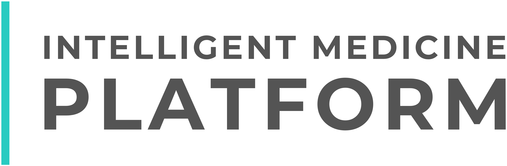

A new generation of wound-care solutions.
One platform. Multiple pathways.
Epitheal's formulation-led skin-health platform is being developed across multiple product and care pathways, from focused human skin-health products and wound-care solutions to veterinary applications and future medical-device development.
50+ years in the making.
Built on more than 50 years of pharmacy and formulation expertise, the portfolio is designed to translate deep product knowledge into differentiated solutions for distinct needs, channels and regulatory environments.
Built for the application. Not adapted to it.
Each application is developed on its own merits, with consideration given to formulation performance, intended use, evidence requirements, claims, user experience, route to market and commercial potential. This allows Epitheal to build a broader product portfolio while maintaining a consistent development philosophy across every category.
One foundation. A growing pipeline.
The result is a pipeline that spans near-term commercial products and longer-term development opportunities, all connected by the same core strengths: pharmacist-led formulation expertise, scientific rigour, disciplined evidence review and a clear focus on the evolving needs of skin health and wound care.

Advanced Human Wound Care
Epitheal applies deep pharmacy and formulation expertise to the development of targeted human skin-health products designed around specific needs, moments and usage behaviours.
The ambition is not to create another broad skincare range. It is to develop more considered products where formulation innovation, application experience and scientific discipline can make a genuine difference.
Targeted Veterinary Wound Care
Epitheal is extending its formulation expertise into veterinary skin and wound care, creating a second major application pathway for the same underlying scientific capability.
Rather than simply adapting human products, each veterinary opportunity is developed around its own use case, formulation needs, evidence requirements and regulatory route.
The result is a broader platform with relevance across human and animal care, expanding the commercial opportunity while building deeper applicational relevance around how the formulation performs across different applications.
Medical Device Innovation
Epitheal is combining proprietary formulation science with medical-device development to create wound-care solutions that are differentiated at two levels: the formulation itself and the technology that delivers it.
That opens the possibility of a second layer of IP around the device, strengthening both product differentiation and long-term defensibility.
This is where Epitheal moves from formulation-led products into integrated wound-care systems: more technical, more specialised and potentially far harder to replicate.